arXiv 2301.04104 · cs.AI · v2 2024 年 4 月 17 日 · Nature 640, 647–653（2025）· 中文精读
Mastering Diverse Domains through World Models（arXiv）；Mastering diverse control tasks through world models（Nature）
作者 Danijar Hafner（Google DeepMind，多伦多大学）、Jurgis Pasukonis（Google DeepMind）、Jimmy Ba（多伦多大学）、Timothy Lillicrap（Google DeepMind）。
关于这份精读。主要读的是 arXiv v2（2024-04-17，40 页），公式和表号都按它。SuperMimic 引的是 Nature 版，所以我也读了 Nature 网页全文、7 张扩展数据表和补充材料 PDF，还读了 arXiv v1 做对照。三版的差别在下面一节。
arXiv 这篇用 CC BY 4.0 授权，所以页里放了原图。所有图都裁自 arXiv v2 的 PDF，作者是 Hafner、Pasukonis、Ba、Lillicrap，只做了裁剪和格式转换，没有改内容。正文是我用自己的话写的，不是逐字翻译。原文的节没有编号，这里用原文的节名。公式按原文编号，表格数字照录。
标成“读者注”的框是我核算或对照的结果，不属于论文内容，页尾有汇总。代码读的是 danijar/dreamerv3 提交 e01491f（2026-10-04），MIT 许可，只读没有运行。V1 的内容在姐妹页，这里不重复，只讲改了什么。
把强化学习算法搬到新领域，通常要专家花力气重新调参。DreamerV3 用一个世界模型加一对演员和评论家，在 8 个领域、超过 150 个任务上用同一套超参数，成绩超过为这些领域专门调过的方法，并且第一次在没有人类数据和课程学习的情况下，从零在 Minecraft 里拿到钻石。
读完我认为最值得记住的三点。第一，V3 的演员不穿过世界模型反传，连续动作也用 Reinforce，这和 v1 的写法不同，也和 SuperMimic 走的路相反（读者注 8）。第二，世界模型基本靠无监督重建，任务信号贡献很小。第三，数字要读细：v2 表 11、12 的“均值”和“中位数”两行写反了，v1、v2、Nature 的控制基准是不同的实验（读者注 12，读者注 2）。
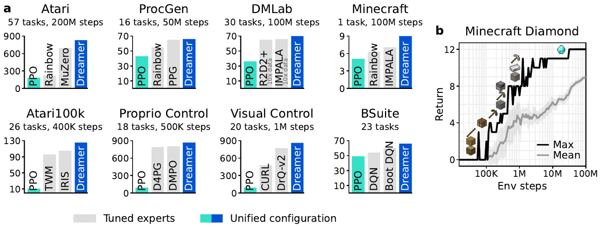
我把第 1 页转成 SVG（pdftocairo -svg），按坐标轴高度标定柱子。能和表对上的都对上：Atari 中位 180、693、830，ProcGen 42.9、64.9、66.0，DMLab 36.0、66.0，Minecraft 5.09、6.29、7.1，BSuite 49、54、60、66。
有两个数只在图里有，表里没有：Rainbow 在 Atari 的中位约 223，R2D2+ 在 DMLab 1B 步约 65.0（表 8 只有 R2D2+ 的 10B 步 85.4）。Nature 扩展数据表 1 给出了 223 和 65，和我读的一致。Minecraft 和 DMLab 的 Dreamer 柱子被坐标轴顶截断了：轴顶是 9 和 70，实际是 9.1 和 71.4。
SuperMimic 的相关工作只有一句提到本文：Dreamer 和 DreamerV3 学隐空间动力学，用于基于想象的演员-评论家学习。参考文献引的是 Nature 版。它没有说从 V3 拿了什么，也没有提到 symlog、two-hot、KL 平衡或回报归一化，我在它的全文里搜过这些词。所以下面的比较是我逐项对两篇原文得出的，不是 SuperMimic 的自述。
相同的地方：都是收集、拟合模型、在模型里改进行为三段轮换。评论家目标的递推形式相同，SuperMimic 式 (3) 写的 \(\hat R_t=\hat r_{t+1}+\gamma(1-\hat d_{t+1})[(1-\lambda)V_{t+1}+\lambda\hat R_{t+1}]\)，和 V3 代码 lambda_return 的下标一致，反而比 V3 论文式 (5) 的写法准确（读者注 6）。都用累积存活概率给想象步加权：SuperMimic 的 \(\hat c_t\) 写在目标里，V3 只写在代码的 weight 里。
最大的不同是策略梯度。SuperMimic 的核心主张是穿过世界模型做 BPTT，它批评 PPO 把动力学当黑箱，用似然比估计。V3（v2、Nature 和代码）的演员恰恰是似然比估计：式 (6) 对连续和离散动作都用 Reinforce，代码把想象状态全部 stop_gradient。所以 SuperMimic 把 Dreamer 和 DreamerV3 放在一句话里，这两者在这一点上其实相反：V1 穿过动力学反传，这和 SuperMimic 同路；V3 不反传，在估计量这一项上和 RWM 用 PPO 更接近。这是我的判断，SuperMimic 原文没有这么说。
| 项目 | DreamerV3 | SuperMimic |
|---|---|---|
| 模型状态 | 学到的 \(h\)（8d 维）和离散 \(z\)（32 个分类），没有物理含义 | 仿真器状态 ŝ，可以逐维监督 |
| 随机性 | 每步采样分类分布，1% 均匀混合 | 确定性 MLP；物理参数写进 ξ，传感器噪声加在模型外 |
| 模型损失 | 式 (2)(3)：单步重建加 KL。先验只被要求走一步 | SuperMimic 式 (1)：k = 8 步自回归平方误差，加终止 BCE |
| 策略梯度 | Reinforce，不穿过模型 | BPTT，穿过模型的雅可比 |
| 策略 | 随机。离散 categorical；连续 Normal，σ ∈ [0.1, 1]（代码） | 确定性，输入带噪观测和目标 |
| 评论家 | 255 桶 two-hot 分布，EMA 正则，回放损失 0.3 | 平方误差回归，没有 EMA |
| 想象长度 H | 15 | 32 |
| γ，γH | 0.997，0.956（我的计算） | 0.99，0.725（我的计算） |
| 尺度处理 | symlog，two-hot，百分位回报归一化，熵系数 3×10⁻⁴ | 原文没有提到这些 |
| 目标 | 跨领域通用，超参数不变 | 一个人形跟踪任务族，单 GPU |
差别的来源可以这样理解：V3 要面对任意未知环境，包括离散动作和不连续的游戏，模型的雅可比不一定可靠，所以选了不依赖雅可比的估计量，代价是方差。SuperMimic 面对的是光滑的刚体仿真，确定性模型的雅可比能用，H 也短，所以选了低方差的反传。动画第 8 幕可以当场比较这两种估计，第 10 幕把四个系统放在一起。这一段“来源”是我的解读，V3 原文没有解释为什么从反传改成 Reinforce。
同一个工作有三个公开版本：arXiv v1（2023-01-10，38 页）、arXiv v2（2024-04-17，40 页）和 Nature 版（2025-04-02 发表，CC BY 4.0，附补充材料 PDF 18 页）。Nature 用了新标题。下表里每一项我都打开原文核对过。
| 项目 | arXiv v1 | arXiv v2（本页主要依据） | Nature |
|---|---|---|---|
| 演员的第一项梯度 | 连续：随机反传；离散：Reinforce（式 11 后） | 都用 Reinforce（式 6） | 都用 Reinforce |
| βdyn | 0.5 | 1 | 1（扩展数据表 5） |
| λ 回报的 bootstrap | \(v_\psi(s_{t+1})\)（式 7） | \(v_t\)（式 5） | \(v_t\) |
| two-hot 的空间 | symlog 空间等距的 255 桶，读数后 symexp（式 8 附近） | 桶位于 symexp(−20…20)，按原值加权（式 10、12） | 同 v2 |
| 学习率、优化器 | 模型 10⁻⁴，演员评论家 3×10⁻⁵，Adam，裁剪 1000 和 100 | 统一 4×10⁻⁵，LaProp，AGC 0.3 | 同 v2 |
| 激活、回放容量 | LayerNorm + SiLU，10⁶ | RMSNorm + SiLU，5×10⁶ | 同 v2 |
| 模型大小 | XS 到 XL（8M 到 200M），类数 32 固定 | 12M 到 400M，类数 d/16 | 再加 1M |
| Proprio 控制 | 18 任务，500K 步 | 18 任务，500K 步，12M 模型，回放 512，动作重复 2 | 20 任务，1M 步，1M 模型，回放 1024，动作重复 1 |
| Visual 控制 | 20 任务，1M 步 | 20 任务，1M 步，12M 模型，回放 512，动作重复 2，Dreamer 861（该行实为中位数） | 20 任务，1M 步，200M 模型，回放 256，动作重复 1，Dreamer 802（均值） |
| 控制基准的对手 | D4PG、DMPO、DrQ-v2、CURL 等 | 同左 | 加 TD-MPC2，说明了它的代码用了论文没写的数据增强和帧堆叠 |
| ProcGen | 没有这个基准 | Dreamer 66.01，回放 64，1 个种子，16.1 GPU 天，“matches PPG” | Dreamer 72（补充表 71.6），回放 32，5 个种子，8.3 GPU 天，“outperforms PPG” |
| Minecraft 说法 | 第一个 | 第一个 | 加了“to our knowledge”。方法里多了动作空间表、“Break speed”和“Other environments”两节 |
| 表 11、12 的均值和中位数 | 没有查 | 两行写反（读者注 12） | 补充表 5、6 写对了 |
| 12M 的循环单元 | 不适用 | 表 3 写 1024 | 2048（读者注 17） |
上表说明版本不只是措辞差别。如果拿“V3 连续动作穿过动力学反传”来讨论，那是 v1 的说法，现行代码和两个后续版本都不是。DMC 的数字更不能混用：v2 的 871 和 861 是 18 或 20 个任务的中位数，Nature 的 843 和 802 是不同实验的均值。SuperMimic 引的 Nature 版没有这些旧数字。
代码的配置（dmc_proprio 用 size1m、回放 1024；dmc_vision 回放 256；dmc.repeat: 1）和 Nature 一致，和 v2 不一致。ProcGen 的 train_ratio: 64 却和 v2 一致。
我没有对 Nature 全文和 v2 做逐句比对，只比对了公式、表、超参数和结果段。Nature 的扩展数据表是图片，表 1、2、4、5 我是看图读的，表 3、6、7 只读了标题。
V1 的框架这里不重复：世界模型 RSSM、在隐空间里想象、λ 回报训练评论家。下表按 Methods 里“Previous generations”一节和我对 V1、V2 原文的核对，列出到 V3 为止的变化。
| 项目 | V1（ICLR 2020） | DreamerV2（ICLR 2021） | V3（本文） |
|---|---|---|---|
| 随机状态 | 30 维对角高斯 | 32 个分类 × 32 类 | 32 个分类 × d/16 类，1% 均匀混合 |
| 循环状态 | GRU 200 | GRU 600 | 分块 GRU，8 块，8d 维 |
| KL | β = 1，free nats 3 | 平衡 α = 0.8，β = 0.1 或 1（按领域） | β 1 和 0.1，各自 free 1 nat |
| 观测尺度 | 图像，方差固定 1 | 图像，方差固定 1 | 向量先 symlog，图像 sigmoid 输出 |
| 奖励 | 高斯，离散任务 tanh | 高斯，Atari tanh | 255 桶 two-hot |
| 评论家 | 高斯回归，无目标网络 | 高斯回归，目标网络（100 次更新一次） | 255 桶 two-hot，当前网络算回报，EMA 正则，回放损失 |
| 演员梯度 | 穿过动力学 | Atari：Reinforce；连续：穿过动力学 | 都用 Reinforce |
| 回报归一化 | 无 | 无（η 按领域选） | 百分位范围，下限 1，η 固定 |
| H，γ | 15，0.99 | 15，0.995（Atari） | 15，0.997 |
| 优化 | Adam，两个学习率 | Adam，三个学习率 | LaProp，一个学习率，AGC |
| 超参数 | 连续一套，离散要改 | Atari 和连续两套 | 所有基准一套 |
强化学习已经能下围棋、打 Dota，也是改进大语言模型的手段之一。PPO 是常用的标准算法，但追求更高成绩时，大家通常换更专门的算法，每种针对一类难点：连续控制、离散动作、稀疏奖励、图像输入、空间环境、棋类。把算法搬到足够新的任务，比如从游戏到机器人，要花很多功夫和算力调超参数。这使得调参代价高的问题很难用上强化学习。
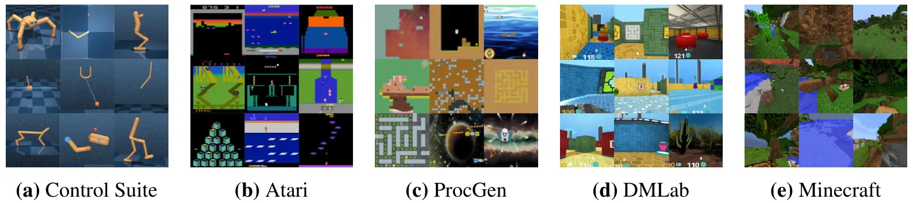
作者提出的 Dreamer 用固定超参数，超过一系列专门调过的算法。思路是学一个世界模型，让智能体有丰富的感知，并且能想象未来。世界模型预测动作的后果，评论家判断结果的价值，演员选能到达最好结果的动作。想法直观，但稳健地学和用世界模型一直没解决好。Dreamer 靠归一化、平衡和变换三类稳健技巧跨过去，并且模型越大，分数越高，需要的交互也越少。
挑战任务是 Minecraft。2019 到 2021 年的 MineRL 比赛提供人类专家数据，因为稀疏奖励、探索难、时间跨度长、世界程序生成，从零拿钻石被视为难题，之前的方法都用了人类数据或者课程学习。论文说 Dreamer 是第一个开箱就从零拿到钻石的算法。
表 2 按基准加起来是 1 + 30 + 16 + 57 + 26 + 23 + 18 + 20 = 191。但 Atari100k 的 26 个游戏全部在 Atari 57 里，Proprio 的 18 个任务全部在 Visual 的 20 个里，这两项我用脚本比对过名字。去掉重复是 147。再加图 6 消融用到而基准里没有的 Crafter、PinPad 等（图 17），才超过 150。BSuite 的 23 个环境实际有 468 个配置，换一种数法也能超过。这不算错，只是“150”取决于数法。
这是 Dreamer 第三代。三个网络从回放经验里同时训练，并且智能体一边和环境交互。要跨领域，三个部件都得适应信号尺度的差异，并且稳健地平衡目标里的各项。
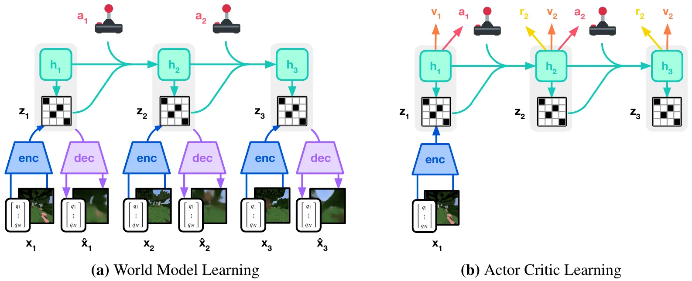
世界模型用自编码学紧凑表征，并且通过预测未来的表征和奖励支持规划。实现是 RSSM（循环状态空间模型）：编码器把输入 \(x_t\) 变成随机表征 \(z_t\)，序列模型用循环状态 \(h_t\) 和动作预测下一个表征。\(h_t\) 和 \(z_t\) 拼接是模型状态，用来预测奖励 \(r_t\)、继续标志 \(c_t\in\{0,1\}\)，并重建输入：
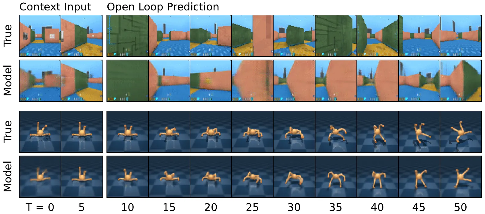
图像用卷积网络编解码，向量用 MLP，动力学、奖励、继续预测器也是 MLP。表征从一组 softmax 分布采样，采样步用直通梯度（straight-through：前向是采样结果，反向按概率求导）。给一批序列，端到端最小化：
预测损失用 symlog 平方误差训练解码器和奖励预测器（奖励后来换成 two-hot，见稳健预测），用逻辑回归训练继续预测器。动力学损失让序列模型去逼近下一个随机表征。表征损失反过来让表征更容易预测，这样想象时可以用因子化的动力学预测器快速采样。两者差别只在 stop-gradient 算符 sg(·) 和权重。为防止出现“动力学容易预测，但表征不含信息”的退化解，用 free bits：两项都被截到 1 nat 以下不再优化：
以前的世界模型要按环境的视觉复杂度调表征损失的权重：3D 环境细节多，需要强约束；背景固定、单个像素可能要紧的游戏需要弱约束。作者说 free bits 加一个小的表征权重解决了这个两难。向量观测再过 symlog，防止大输入和大重建梯度破坏这个平衡。
早期实验里 KL 偶尔出现尖峰，深层 VAE 也有这种报告。于是把编码器和动力学预测器的分类分布都做成 1% 均匀加 99% 网络输出，让它们不可能变成确定性分布。
“1 nat ≈ 1.44 bits”：\(1/\ln 2=1.4427\)，对。
式 (3) 看不出 KL 是怎么汇总的。代码 rssm.py 里 _dist 用 Agg(out, 1, jnp.sum) 把 32 个分类的 KL 加起来，再 jnp.maximum(dyn, free_nats)。所以 1 nat 是整个 \(z\) 的额度。200M 模型的 \(z\) 能表达 32 × 6 = 192 比特，1 nat 只是很小的一部分。
v2 正文和表 4 都没写分类的个数，只说“number of latents is fixed”。32 这个数我在 v1 的表 W.1 和代码 rssm.stoch: 32 里找到。
式 (2) 的 βdyn = 1 在 v1 里是 0.5（v1 式 4），代码是 dyn: 1.0。式 (3) 的比例由此从 5:1 变成 10:1。
有 1% 混合时，两个完全错开的分类之间 KL 不超过 \(\ln(K/0.01)\)，64 类时是 8.76 nat。动画第 2 幕当场算：混合时 8.667，关掉后尖锐度 40 时是 40，继续调尖还会涨。这是我的推导和数值验证，论文只说“well-behaved”。
演员和评论家只从世界模型预测出来的抽象轨迹学行为。和环境交互时直接从演员采样，不做前瞻规划。它们的输入是模型状态 \(s_t\doteq\{h_t,z_t\}\)。演员最大化回报 \(R_t\doteq\sum_{\tau=0}^\infty\gamma^\tau r_{t+\tau}\)，γ = 0.997。为了顾及预测窗口 T = 16 之外的奖励，评论家学的是当前演员下回报的分布：
从回放输入的表征出发，世界模型和演员生成一条想象轨迹 \(s_{1:T},a_{1:T},r_{1:T},c_{1:T}\)。评论家读数是分布的期望 \(v_t\doteq\mathrm E[v_\psi(\cdot\mid s_t)]\)。自举的 λ 回报（不同步数回报的指数加权平均，见 V1 式 (6)）把预测奖励和价值合在一起，评论家用最大似然学它的分布：
回报分布可能多峰，而且跨环境相差几个数量级，所以评论家不用正态分布，用指数间隔桶上的分类分布，把梯度大小和目标大小解开。奖励难预测时，评论家损失同时用在想象轨迹（βval = 1）和回放轨迹（βrepval = 0.3）上：回放轨迹的末端价值取想象回报在起点的 \(R^\lambda\)，再在回放奖励上算 λ 回报。
评论家的目标依赖它自己的预测，所以把它往自身参数 EMA（指数滑动平均）的输出上正则。这和目标网络类似，但回报用当前网络算。另外，随机初始化的奖励预测器和评论家一开始可能预测出很大的奖励，拖慢学习，所以把它们的输出权重初始化为 0。
正文写“prediction horizon T = 16”，表 4 写 H = 15，同一页的表 4 还有 Batch length T = 64。同一个字母 T 指了两件事。代码是 imag_length: 15，想象 15 步，加上起点，每条 16 个状态：assert ... == (B * K, H + 1)。于是 16 个状态、15 个回报和 15 项演员损失，两个数都对得上。
起点数论文没写。代码 imag_last: 0 表示 K = min(imag_last or T, T) = 64，所以每批 16 × 64 = 1024 条想象。
γ15 = 0.956，λ14 = 0.488，加权平均前看 \((1-\lambda^{15})/(1-\lambda)=10.73\) 步。γ 比 V1 的 0.99 大，窗口外份额从 86% 变成 95.6%（恒定奖励），评论家更重要。
式 (5) 是 \(r_t+\gamma c_t((1-\lambda)v_t+\lambda R^\lambda_{t+1})\)，用了当前状态的价值 \(v_t\)。这一步应该自举下一状态。v1 式 (7) 写的是 \(v_\psi(s_{t+1})\)。代码 lambda_return 写的是 \(R_t=r_{t+1}+\gamma c_{t+1}((1-\lambda)v_{t+1}+\lambda R_{t+1})\)，也是下一状态，并且奖励的下标同样后移。Nature 版的公式和 v2 相同（我比对了网页的 LaTeX）。
字面照 v2 算会怎样？一条 40 个状态的链，第 20 个状态奖励 1，表格型评论家迭代到收敛，γ = 0.997，λ = 0.95，H = 15。v1 和代码的写法收敛到真值，奖励状态是 1.000。v2 字面写法是 1.052，前面的状态都抬高约 5%（第 10 个状态 1.020，真值 0.970）。这个倍数正好是 \(1/(1-\gamma(1-\lambda))=1.0525\)。动画第 6 幕可以切换三种写法。
我认为这是排版错误，或者作者心里有另一套下标约定，论文没说明。画动画我用的是代码的写法。
式 (5) 的 γ 是显式乘的，\(c_t\in\{0,1\}\)。代码 contdisc: True 的做法不同：继续头的目标是 \(c\times(1-1/333)\)，回报里 disc = 1，γ 通过预测的继续概率进入。期望上等价，论文没提。回放损失里则显式用 disc = 1 - 1/horizon。
演员和评论家的想象损失都乘累积继续权重 weight = cumprod(disc * con) / disc，式 (5)(6) 没有这一项。SuperMimic 把这个权重写进了目标。
EMA 正则的具体形式也没写：slowreg * value.loss(sg(slowvalue.pred()))，取慢网络的期望，再编码成 two-hot 去训练快网络，而不是匹配慢网络的整个分布。
演员选最大化回报的动作，同时用熵正则探索。合适的正则系数既取决于奖励的尺度，也取决于奖励的频率。希望的行为是：奖励稀疏时多探索，奖励密集或就在眼前时多利用，并且不受奖励任意缩放的影响。这要求把回报尺度归一化，同时保留奖励频率的信息。
为了跨领域用固定的 η = 3×10⁻⁴，把回报归一化到约 [0, 1]。回报减去常数不改变演员梯度，所以只除以范围 S。为了避免稀疏奖励下放大函数逼近的噪声，只缩小大回报，小于 L = 1 的不动。两种动作都用 Reinforce 估计量，代理损失是：
回报分布可能多峰、有离群值。用最小和最大值归一化会缩得过头。所以 S 取批内第 95 和第 5 百分位之差，再做滑动平均：
作者比较了其他做法。归一化优势（advantage，回报减基线）不管奖励够不够得着，都给回报固定的权重，稀疏奖励下放大噪声，压过熵正则，探索停滞。按标准差归一化奖励或回报，在稀疏奖励下标准差接近 0，奖励被大幅放大。约束优化（如 SAC 的目标熵）按状态平均追固定的熵，稳健，但稀疏时探索慢，密集时收敛低。这些做法作者都没找到跨领域稳定的超参数。
反转。v1 式 (11) 后面写的是：按 DreamerV2 的做法，连续动作用随机反传，离散动作用 Reinforce。v2 这一节写的是“use the Reinforce estimator for both discrete and continuous actions”，Nature 同。这个改动论文没有解释，“Previous generations”一节列的改动也没有包括它。
代码。agent.py 的 imag_loss 里 logpi = v.logp(sg(act[k]))，policy_loss = sg(weight) * -(logpi * sg(adv_normed) + actent * ents)。imgfeat 过 sg，rssm.imagine 里 policy(sg(carry))，默认 ac_grads: False。所以回报对动作没有路径，世界模型的雅可比确实不进入演员更新。和 v2 一致。
符号。式 (6) 没有括号，字面上 \(+\eta\mathrm H\) 在求和号外面，而且是加在一个要最小化的损失上，那就是在压低熵。代码是 \(-(\log\pi\cdot\mathrm{adv}+\eta\mathrm H)\)，熵被提高。v2 PDF 和 Nature 的 LaTeX 都没有括号，所以 Nature 版也是这样。这应该是排版问题，意思看上下文没有疑问。
论文没写的。连续动作的分布：bounded_normal，均值过 tanh，标准差在 [0.1, 1]，采样不压缩。输入端 action /= sg(max(1, |action|))。输出层缩放 0.01。“Actor unimix 1%”只对离散起作用。我在 v2 全文里没搜到这些。
动画第 8 幕在玩具上当场估计两种梯度。默认 H = 15、c = 0.15、64 条一批时，Reinforce 的标准差 3.44，穿过动力学 3.65，差不多；c = 0 时穿过动力学 0.62，Reinforce 1.44，反传更稳；c = 0.3 时穿过动力学 14.6，Reinforce 3.99，反传的方差炸了。这和“为什么换”可能有关，但只是玩具，不是作者给的理由。离散动作时直通梯度有偏：c = 0.15、H = 10 的真值 4.71，直通 4.41，Reinforce 4.65。
式 (7) 是差的 EMA。代码 Normalize 分别对第 95 和第 5 百分位做 EMA 再相减。两者衰减相同，是线性的，结果一样。debias: False，初值 0，所以前面几百次更新 S 偏小，要 298 次更新才到 95%（\(\ln 0.05/\ln 0.99\)）。这段时间 \(\max(1,S)\) 让回报基本不缩放。
adv = (ret - tarval[:, :-1]) / rscale，只除不减，和“减常数不改变梯度”一致。advnorm 和 valnorm 都是 none。
动画第 7 幕的玩具：造的 1024 个回报，百分位范围 0.59，最大减最小 1.11；加 2% 离群值后，百分位范围只到 0.64，最大减最小到 11.8。三臂赌博机（奖励 0、1、0.2 乘尺度）跑 6000 步：尺度 0.001 时 max(1, S) 的熵 1.098（还在探索），归一化优势的熵 2.5×10⁻⁴（已经收敛）；尺度 1000 时不归一的熵 1.4×10⁻⁵，max(1, S) 的熵 0.018，和尺度 1 的 0.020 接近。只有噪声没有奖励差时（σ = 0.001），max(1, S) 的熵 1.099，归一化优势的熵 0.746，噪声被放大了。这和正文的论述方向一致，但玩具不是论文的实验。
重建输入、预测奖励和回报都面临尺度跨领域变化的问题。大目标配平方损失可能发散；绝对损失和 Huber 损失学得慢；按滑动统计量归一化目标又引入非平稳。作者的办法是 symlog 平方误差：网络预测变换后的目标，读数时反变换：
对数不能处理负目标，所以取双对称对数族里的一个函数，命名为 symlog：
它压缩大的正负数，关于原点对称，原点附近接近恒等，所以已经够小的目标不受影响。
对可能随机的目标（奖励、回报），用 symexp two-hot 损失。网络输出指数间隔桶上的 softmax，读数是桶位置的加权平均，可以落在桶之间：
two-hot 编码是 one-hot 向连续值的推广：只有最靠近目标的两个桶非零，两者和为 1，离得近的权重线性地更大。损失是软标签的交叉熵。它只取决于各桶的概率，和桶代表的数值无关，所以梯度大小和目标大小解开了：
于是向量观测的编码器输入和解码目标用 symlog，奖励预测器和评论家用 symexp two-hot。评论家还有一种不对称变换（R2D2 的），作者说平均效果差一些。symlog 不截断大目标、不引入归一化的非平稳，也不用在发现新极值时调整网络权重（PopArt 的做法）。
3D 框架动画 · 10 幕 · 可拖动、可调参数
第 3 到 8 幕当场计算：拖目标看 symlog 和 two-hot，换 β 和 free nats 看 KL，换递推写法看 λ 回报，调奖励尺度看归一化，切版本和动作类型估两种梯度。玩具和论文的数都有标注。
桶数。v2 式 (10) 没写桶数，“−20…+20”也没写步长。255 来自 v1 正文和代码 bins: 255。于是 symlog 空间的步长是 40/254 = 0.1575，最大的桶是 symexp(20) = 4.85×10⁸。
空间。v1 式 (8) 是先把目标 symlog，在 symlog 空间做 two-hot，再 symexp 读数。v2 式 (10)(12) 和代码是另一种：桶位于 symexp 后的原值，权重按原值线性分配，期望也在原值上算（TwoHot 不传 squash）。比如 y = 3，桶 135 = 2.525，桶 136 = 3.126，权重 0.210 和 0.790。
式 (12) 的 k。\(k=\sum_j\delta(b_j<x)\)，\(j\) 从 1 数，所以 \(b_k<x\le b_{k+1}\)。代码用 bins <= target，只在正好落在桶上时有差别，此时代码给那个桶权重 1。
求和顺序。原文说要分正负从小到大求和。我用 Math.fround 模拟 32 位浮点：均匀分布从左到右加得 0.625，代码的对称加法得 0。这个 0.625 就是“初始化时幻想出奖励”的来源之一。
梯度。均匀初值下，目标 1、10³、10⁶ 的 two-hot 对 logits 的梯度范数是 0.72、0.87、0.77；平方误差是 1、10³、10⁶；symlog 平方误差是 0.69、6.9、13.8。动画第 4 幕当场显示。
在 8 个领域、超过 150 个任务上用固定超参数评测，和文献里的最好方法比（它们通常是为基准专门设计和调参的），也和一个高质量的 PPO 实现比。每个 Dreamer 智能体都在一块 A100 上训练。代码公开。
用表里的 Random、Gamer、Record 列重算聚合行（玩家归一化分 = (分数 − 随机) / (玩家 − 随机)）：
| Atari 表 6 | PPO | MuZero | Dreamer |
|---|---|---|---|
| 玩家中位：表 / 重算 | 180 / 180.3 | 693 / 680.0 | 830 / 833.3 |
| 玩家均值：表 / 重算 | 892 / 885.2 | 3054 / 3046.4 | 3381 / 3372.7 |
| 纪录均值：表 / 重算 | 21 / 21.3 | 66 / 66.4 | 74 / 74.2 |
| 纪录封顶：表 / 重算 | 21 / 21.3 | 34 / 33.5 | 38 / 38.0 |
差别应该来自表里分数四舍五入，有些游戏分母很小（Double Dunk 只有 3），我没有证明这一点。Atari100k、BSuite 的聚合行重算后都对上（125 对 124.7，66 对 65.6，63 对 62.9）。
“超过 MuZero”要读细。聚合上是超过。逐游戏看，57 个里 Dreamer 高的 32 个，相同 4 个，低的 21 个。
DMLab。Dreamer 71.4，IMPALA 1B 步 66.3。表 8 的 R2D2+ 只有 10B 步 85.4，比 Dreamer 高，那个 1B 步的 65 只在图 1 里（读者注 1）。逐任务，Dreamer 高于 IMPALA 1B 的有 16 / 30 个。“超过 1000%”就是 10 倍数据的说法，严格说是省了 90%，提升 900%。
ProcGen。v2 是 66.01 对 PPG 64.89，v2 用“matches”；Nature 的补充表是 71.6 和 64.9，用“outperforms”。逐任务 v2 里 Dreamer 高于 PPG 的是 9 / 16。Bigfish 8.62 对 31.26、Fruitbot 11.04 对 24.32 输得不少。
重算（v2，用表里的 18 或 20 个任务）：
| 表写的“Task mean” | 重算中位数 | 表写的“Task median” | 重算均值 | |
|---|---|---|---|---|
| 表 11 Dreamer | 871 | 870.5 | 754 | 753.6 |
| 表 11 DMPO | 801 | 801.5 | 705 | 705.1 |
| 表 11 PPO | 94 | 94.0 | 215 | 214.7 |
| 表 12 Dreamer | 861 | 861.5 | 786 | 786.0 |
| 表 12 DrQ-v2 | 770 | 770.5 | 705 | 705.0 |
| 表 12 PPO | 94 | 94.5 | 206 | 206.4 |
每一列都是这样：写着均值的那行其实是中位数。图 1 这两个面板的柱高我读出来是 870、861、801、770、94，用的就是这一行，而图 1 的说明没写指标。所以 v2 拿 871 和 801 比，比的是中位数。按真均值是 753.6 对 705.1 和 D4PG 的 733.4。Nature 补充表 5、6 里 mean 和 median 是对的（Visual Dreamer 802 均值，900 中位数）。
每个回合是一个随机生成的无限 3D 世界。回合到死亡或 36000 步（30 分钟），要从稀疏奖励里依次拿到 12 种物品。熟练玩家大约 20 分钟拿到钻石。沿用既有工作的快速破坏方块设定，因为随机策略很难长时间按住一个键。不调参，默认超参数开箱用。Dreamer 是第一个不用人类数据（VPT 用了）或自适应课程的。训练的所有 Dreamer 智能体都在 1 亿步内发现钻石；基线能到铁镐，但都没有钻石。
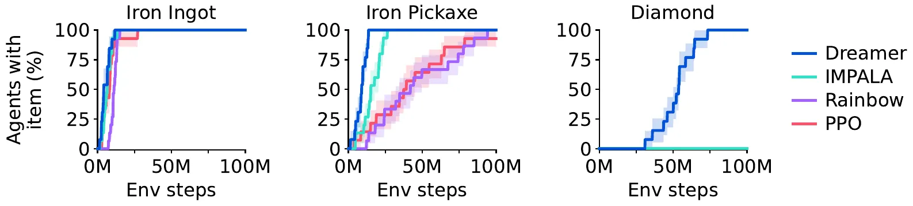
方法节写 1 亿环境步“about 100 days of in-game time”。控制频率是 20 Hz，动作重复 1（表 2），所以 \(10^8/20=5\times10^6\) 秒，是 57.9 天。Nature 同样写 100 天。其他几个对得上：36000 / 20 Hz = 30 分钟，40 万帧 / 60 Hz = 1.85 小时（原文“2 小时”），Nature 的 \(25^{-400}\approx10^{-559}\)（原文 \(10^{-560}\)）。
快速破坏方块是这个结果的前提之一。Nature 专门加了“Break speed”一节解释：按原速度，要按住几百步，25 个动作的均匀策略几乎不可能做到。“1 块 GPU 对 720 块”这个比较两边设定不同：Dreamer 用快速破坏和比赛动作空间，VPT 用键鼠动作和人类数据。
仓库的 scores/minecraft_diamond-dreamerv3.json.gz 有 20 条运行，正文说 10 个种子。我统计了回报 ≥ 11.5（拿到第 12 个里程碑）：20 条里 19 条到过，最早 30.9M 步，最晚 73.2M 步；第 3 条最高 11，且只跑到 70.4M 步。有 7 条在 99M 步之前就结束了。
所有运行最后 5M 步的回合平均回报 8.92（表 5 是 9.1），其中拿到钻石的回合 0.45%（图 9 说明是 0.4%）。这些大致吻合。
我不知道论文用的是哪 10 条，所以这不构成矛盾，只说明“全部”依赖选哪些运行。这个文件是 2024-04-15 那个提交（2411f7d）加入的。
在 14 个任务上去掉稳健技巧和学习信号。作者观察到每个技巧都有贡献，最明显的是世界模型的 KL 目标，其次是回报归一化和 symexp two-hot。每个技巧对部分任务关键，对其他任务没影响。去掉任务相关的奖励和价值梯度，或者任务无关的重建梯度：Dreamer 主要靠无监督的世界模型目标，这意味着未来可能用无标注数据预训练。
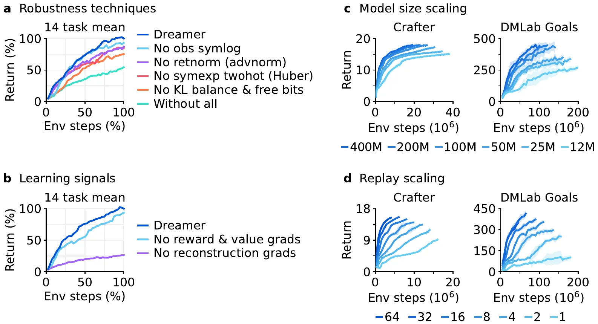
第 9 页转 SVG，按刻度标定，每条曲线 40 个点。
| 条件 | 终点 | 最后 5 点平均 | 全程平均 |
|---|---|---|---|
| Dreamer | 100.0 | 101.2 | 68.8 |
| 无观测 symlog | 93.0 | 92.2 | 64.2 |
| 无回报归一（用优势归一） | 87.0 | 84.4 | 58.2 |
| 无 two-hot（Huber） | 84.6 | 84.9 | 57.0 |
| 无 KL 平衡和 free bits | 75.4 | 73.7 | 48.0 |
| 全部去掉 | 54.4 | 51.4 | 33.8 |
“最明显的是 KL”，读数支持。“其次是回报归一化和 two-hot”这个顺序，两条曲线几乎重合，最后 5 点平均甚至反过来，当成并列更稳。图 6b：去掉重建梯度终点 26.2，去掉奖励和价值梯度终点 93.6。
“无 KL 平衡和 free bits”在 v2 没有定义具体做法。v1 的附录分别定义过：NoFreeBits 把常数 1 改成 0，NoKLBalance 让两个 β 都等于 0.5。v2 这条曲线把两者合在一起，没法从图里分开。
6 种模型大小（12M 到 400M 参数），不同回放比例（决定梯度更新次数），在 Crafter 和一个 DMLab 任务上。固定超参数下都稳健。模型越大，分数越高，所需数据越少。更多梯度步进一步减少所需交互。
通用算法是长期目标。PPO 用得最广，相对稳健，但要很多经验，成绩常低于专门算法。SAC 是连续控制的常用选择，用经验回放省数据，但实践中要调熵系数，高维输入也吃力。MuZero 用价值预测模型规划，用于棋类和 Atari，但没有公开实现，部件复杂，难复现。Gato 用一个大模型拟合多任务专家示范，只能在有专家数据时用。
Minecraft 方面：MALMO 是微软发布的研究版。作者的实验基于 MineRL 比赛环境。Voyager 通过语言模型调 API，物品深度和 Dreamer 类似，但运行在 MineFlayer 脚本层上，有高层动作。VPT 用外包人员的键鼠数据做行为克隆，再用强化学习微调，720 块 GPU 跑 9 天拿到钻石。Dreamer 用 MineRL 比赛动作空间，从稀疏奖励自主学习，1 块 GPU 跑 9 天，不用人类数据。
Nature 版这一节多了一段世界模型的脉络：PILCO、E2C、Visual Foresight、PlaNet、IRIS、TWM、R2I、TD-MPC2，并且说 TD-MPC2 用了 Dreamer 的百分位回报归一化。
第三代 Dreamer 用固定超参数跨领域工作，跨数据和算力预算也稳健。第一个从零拿到 Minecraft 钻石。未来方向是从互联网视频教智能体世界知识，以及跨领域学一个世界模型。
PPO 用 Acme 框架里的实现（公开实现差别很大，所以选质量高的），按建议设超参，另外调了 epoch 批量、学习率和熵系数。折扣和 Dreamer 对齐。网络用 IMPALA 结构。在 ProcGen 上验证能达到或略超 PPO 作者的高调优结果。
| 表 1 · PPO 超参数 | 值 |
|---|---|
| 观测归一化 | 是 |
| 奖励归一化 | 是 |
| 奖励裁剪（标准差） | 10 |
| Epoch 批量 | 64 × 256 |
| Epoch 数 | 3 |
| 小批量大小 | 8 |
| 小批量长度 | 256 |
| 策略信赖域 | 0.2 |
| 价值信赖域 | 否 |
| 优势归一化 | 是 |
| 熵惩罚系数 | 0.01 |
| 折扣 | 0.997 |
| GAE λ | 0.95 |
| 学习率 | 3×10⁻⁴ |
| 梯度裁剪 | 0.5 |
| Adam ε | 10⁻⁵ |
Minecraft 另外调并跑了 IMPALA 和 Rainbow，也是 Acme 实现，因为文献里没有从零端到端成功的报告。其他基准的专家方法成绩来自文献。
经验回放。均匀回放加在线队列（online queue）：每个小批量先取尚未用过的新轨迹，再用回放的均匀采样补齐。采集时把隐状态存进缓存，用于在回放轨迹上初始化世界模型，训练后把新的隐状态写回去。优先回放也有提升，但为了实现简单没有用。
回放比例（replay ratio）。每收集一个时间步训练多少个时间步，不计动作重复。除以小批量的时间步数和动作重复，得到梯度步和环境步的比。例子：比例 32，Atari 动作重复 4，批量 16 × 64，每 128 个环境步一个梯度步，2 亿步共 150 万个梯度步。
优化器。自适应梯度裁剪（AGC）：逐张量，梯度超过权重 L2 范数的 30% 就裁，默认 ε = 10⁻³。它让裁剪阈值和损失尺度解耦。然后用 LaProp，ε = 10⁻²⁰，β₁ = 0.9，β₂ = 0.99。LaProp 先做 RMSProp 归一化，再做动量，而 Adam 是两者都用原始梯度。这样 ε 可以更小，也避免了 Adam 偶尔的不稳定。
分布。编码器、动力学预测器和演员都是 99% softmax 加 1% 均匀。奖励和评论家输出指数间隔桶上的 softmax，目标是 two-hot：
输出权重初始化为 0。跨多个量级的桶求期望时，求和顺序要紧：正负分开，从小到大。
网络。图像用步长 2 的卷积压到 6×6 或 4×4，展平，再用反卷积解码，输出过 sigmoid。向量先 symlog，再用 3 层 MLP 编解码。演员和评论家是 3 层 MLP，奖励和继续预测器是 1 层。序列模型是分块 GRU：循环权重分成 8 块对角，这样记忆单元可以很多而参数量和算量不按平方涨。GRU 每步的输入是 \(z_t\)、\(a_t\) 和循环状态的线性嵌入，用于块间混合。表 4 的 RMSNorm 是按均方根归一化的层归一化变体，SiLU 是平滑版的 ReLU 类激活。
Atari 的随机和人类参考分在文献里不统一，作者取最常见的值（表 6）。DMLab 用固定动作空间，评测在 1 亿步，因为跑不到有些工作的 100 亿步；基线在 1 亿步很差，所以和它们的 10 亿步比。ProcGen 用困难难度和无限关卡。Minecraft 在 1 亿步报告回合回报。Atari100k 是 40 万环境步（动作重复后 10 万）。Visual Control 动作重复 2，Proprio Control 同协议，去掉两个四足任务，因为基线没有。
| 表 2 · 基准 | 任务 | 环境步 | 动作重复 | 环境实例 | 回放比例 | GPU 天 | 模型 |
|---|---|---|---|---|---|---|---|
| Minecraft | 1 | 100M | 1 | 64 | 32 | 8.9 | 200M |
| DMLab | 30 | 100M | 4 | 16 | 32 | 2.9 | 200M |
| ProcGen | 16 | 50M | 1 | 16 | 64 | 16.1 | 200M |
| Atari | 57 | 200M | 4 | 16 | 32 | 7.7 | 200M |
| Atari100K | 26 | 400K | 4 | 1 | 128 | 0.1 | 200M |
| BSuite | 23 | — | 1 | 1 | 1024 | 0.5 | 200M |
| Proprio Control | 18 | 500K | 2 | 16 | 512 | 0.3 | 12M |
| Visual Control | 20 | 1M | 2 | 16 | 512 | 0.1 | 12M |
环境实例。Dreamer 和 PPO 对实例数都稳健，默认 16 个。BSuite 要求 1 个。Atari100k 也用 1 个，因为预算 40 万步，而 Atari 回合最长理论上有 43.2 万步。Minecraft 用 64 个，环境慢，用远程 CPU。
种子和误差条。每个基准 5 个种子，ProcGen 1 个（算力限制），BSuite 10 个（基准要求），Minecraft 10 个。曲线是种子均值，阴影是一个标准差。
算力选择。都在单块 A100 上。默认 200M 模型。两个控制基准用 12M 模型，成绩相同。回放比例按预算选。
算术：\(32/(16\times64)/4=1/128\)，对。\(2\times10^8/128=1.5625\times10^6\)，原文“1.5M”是取整。代码 elements.when.Ratio(train_ratio / batch_steps) 和定义一致。
| 基准 | v2 表 2 | Nature 扩展数据表 2 | 代码 configs.yaml |
|---|---|---|---|
| Atari | 32 | 32 | 32 |
| DMLab | 32 | 32 | 32 |
| ProcGen | 64 | 32 | 64 |
| Atari100k | 128 | 128 | 256 |
| BSuite | 1024 | 1024 | 1024 |
| Visual | 512 | 256 | 256 |
| Proprio | 512 | 1024 | 1024 |
Atari100k 的 256 和两版论文的 128 都不一样。我没有查仓库历史里这个值何时改的。train_ratio 的默认是 32，复现别的基准时要带上对应的 config 块。
大小由模型维度 d 决定，d 大约按 1.5 倍增长，在 2 的幂和 2 的幂乘 1.5 之间交替，这样张量形状是 8 的倍数。MLP 隐藏单元数是 d，序列模型单元数是 8d，分成 8 块；靠近数据的卷积层通道数是 d/16；每个隐变量的类数是 d/16。层数和隐变量个数固定。所有超参数（包括学习率和批量）跨模型大小不变。
| 表 3 · 参数量 | 12M | 25M | 50M | 100M | 200M | 400M |
|---|---|---|---|---|---|---|
| 隐藏单元 d | 256 | 384 | 512 | 768 | 1024 | 1536 |
| 循环单元 8d | 1024 | 3072 | 4096 | 6144 | 8192 | 12288 |
| 基础卷积通道 d/16 | 16 | 24 | 32 | 48 | 64 | 96 |
| 每隐变量类数 d/16 | 16 | 24 | 32 | 48 | 64 | 96 |
表 3 的 12M。8 × 256 = 2048，表写 1024，其他列都等于 8d。代码 size12m: deter 2048，Nature 扩展数据表 4 也是 2048。v2 这一格是错的。
Nature 表 4 的 1M。新增的一列 d = 64，写基础卷积通道 16，表头又说 d/16，那应是 4。代码 size1m: depth 4。Proprio 没有图像，这个数在那里用不上。
卷积通道。正文说靠近数据的层是 d/16。代码 depth: 64, mults: [2, 3, 4, 4]，第一层是 128，也就是 d/8。
卷积结构。正文说步长 2 和反卷积。代码默认 strided: False：核 5 的卷积加 2×2 最大池化，解码是重复上采样加卷积。
β₂。正文 0.99，代码 beta2: 0.999。LaProp 论文的默认值我没有去查。
预热。表 4 下说不用退火，代码 warmup: 1000 让学习率在前 1000 步线性爬升。这不算退火，但文字没提。
说明。仓库 README 称自己是“A reimplementation of DreamerV3”。所以和论文实验所用代码之间可能还有差别，我无法核实。正文说“reproduces all results”。
DreamerV1 只限连续控制，DreamerV2 在 Atari 上超过人类，DreamerV3 跨基准开箱可用。V3 引入的变化：稳健技巧（观测 symlog、KL 平衡加 free bits、所有分类分布 1% unimix、百分位回报归一化、奖励头和评论家的 symexp two-hot）；网络结构（分块 GRU、RMSNorm、SiLU）；优化器（AGC、LaProp）；回放缓存（更大、在线队列、存和更新隐状态）。
| 表 4 · 名称 | 符号 | 值 |
|---|---|---|
| 通用 | ||
| 回放容量 | — | 5×10⁶ |
| 批量大小 | B | 16 |
| 批量长度 | T | 64 |
| 激活 | — | RMSNorm + SiLU |
| 学习率 | — | 4×10⁻⁵ |
| 梯度裁剪 | — | AGC(0.3) |
| 优化器 | — | LaProp(ε = 10⁻²⁰) |
| 世界模型 | ||
| 重建损失系数 | βpred | 1 |
| 动力学损失系数 | βdyn | 1 |
| 表征损失系数 | βrep | 0.1 |
| 隐变量 unimix | — | 1% |
| Free nats | — | 1 |
| 演员评论家 | ||
| 想象长度 | H | 15 |
| 折扣长度 | 1/(1−γ) | 333 |
| 回报 λ | λ | 0.95 |
| 评论家损失系数 | βval | 1 |
| 评论家回放损失系数 | βrepval | 0.3 |
| 评论家 EMA 正则 | — | 1 |
| 评论家 EMA 衰减 | — | 0.98 |
| 演员损失系数 | βpol | 1 |
| 演员熵正则 | η | 3×10⁻⁴ |
| 演员 unimix | — | 1% |
| 回报归一范围 | S | Per(R, 95) − Per(R, 5) |
| 回报归一下限 | L | 1 |
| 回报归一衰减 | — | 0.99 |
所有基准用同一组值，不用超参数退火、优先回放、权重衰减或 dropout。
游戏。月活 1 亿的游戏。程序生成的 3D 世界，包括多种地貌，1 米见方的方块可破坏和放置，约 30 种生物，超过 350 种合成配方。研究界的第一步目标是拿钻石，它位于地下深处，需要沿科技树一路推进。
学习环境。基于 MineRL v0.4.4（Minecraft 1.11.2）定义扁平分类动作空间，并修了通过人工试玩发现的问题。比如破坏钻石矿时物品有时直接进背包，有时掉在地上，而原环境破坏后就结束回合，很多成功回合没拿到奖励。改成死亡或 36000 步结束。跳跃键要按住超过一个控制步才生效，改成后台按住 200 毫秒。
观测和奖励。64 × 64 × 3 第一人称图像；400 多种物品的背包计数；回合以来的最大背包计数，告诉智能体已完成的里程碑；当前装备的 one-hot；生命、饥饿、氧气。奖励沿用 MineRL 比赛的 12 个里程碑：原木、木板、木棍、工作台、木镐、圆石、石镐、铁矿、熔炉、铁锭、铁镐、钻石。每种每回合只奖励一次，并且每个里程碑一律 +1，方便读回报。另外每失去一颗心 −0.01，每恢复一颗 +0.01，作者说没研究这是否有用。
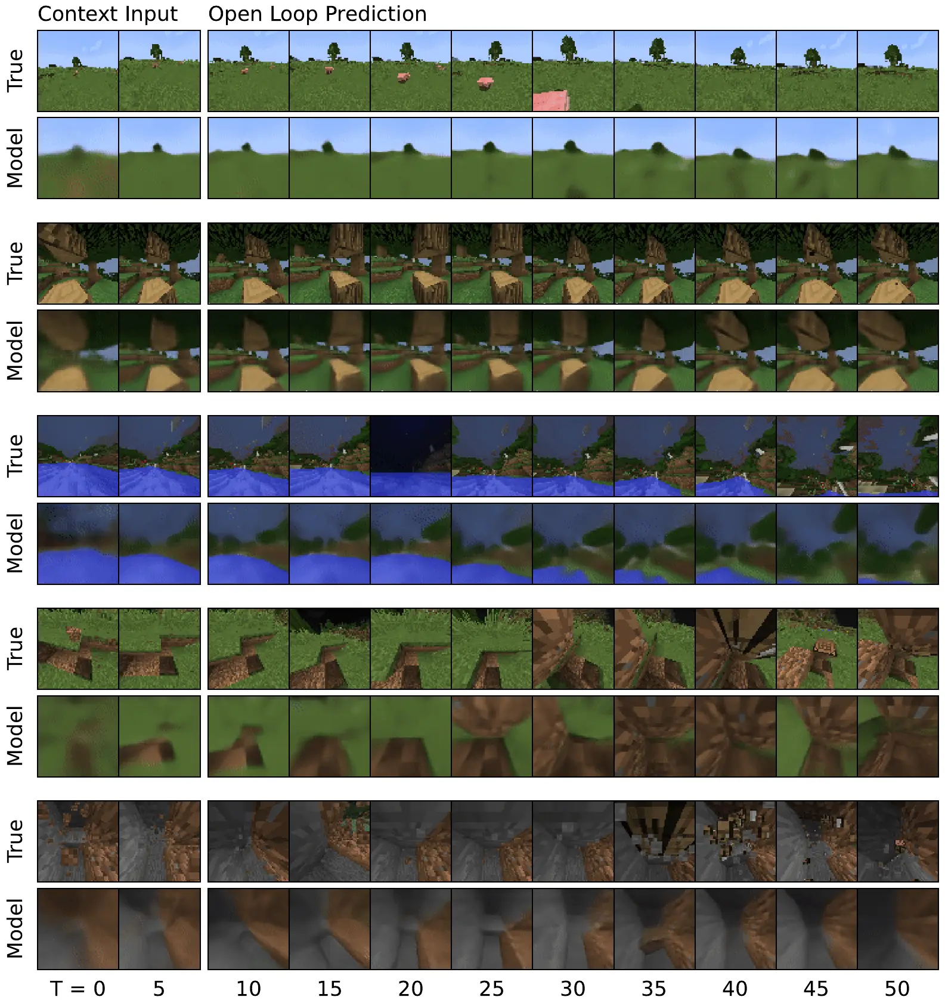
| 表 5 · 方法 | 回报 |
|---|---|
| Dreamer | 9.1 |
| IMPALA | 7.1 |
| Rainbow | 6.3 |
| PPO | 5.1 |
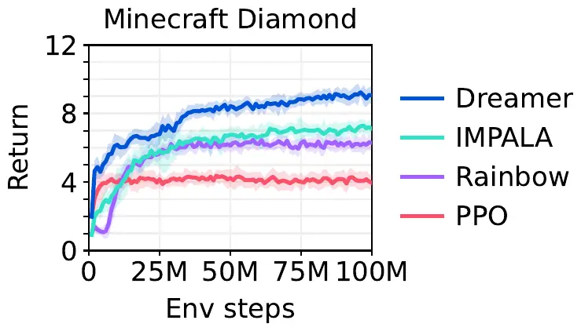
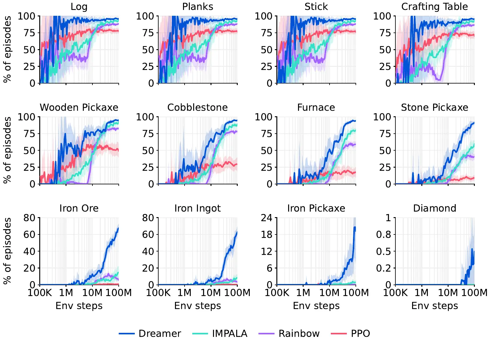
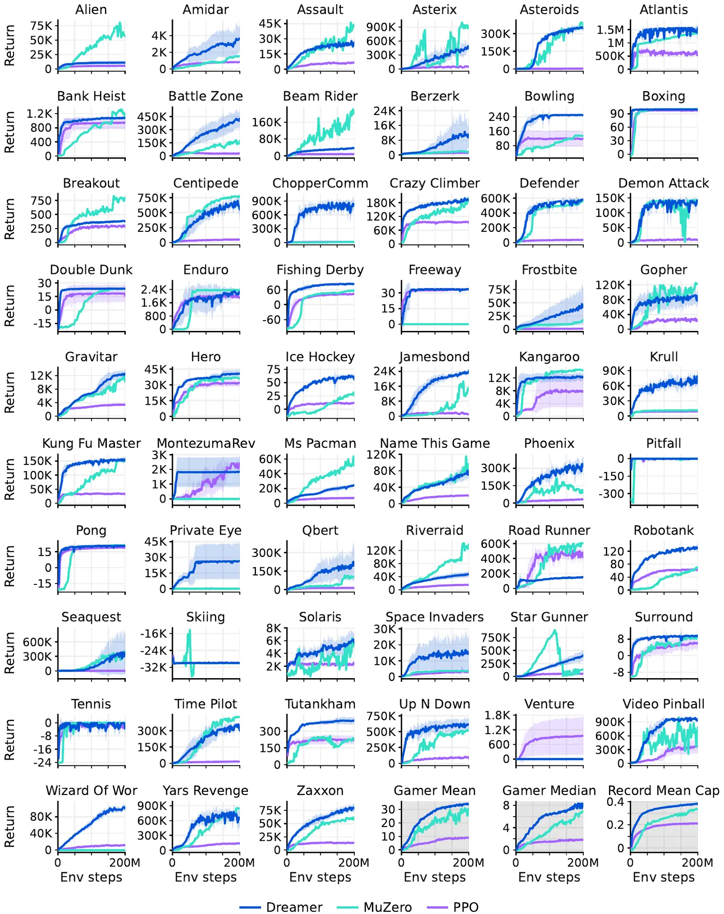
| 任务 | Random | Gamer | Record | PPO | MuZero | Dreamer |
|---|---|---|---|---|---|---|
| Environment steps | — | — | — | 200M | 200M | 200M |
| Alien | 228 | 7128 | 251916 | 5476 | 56835 | 10977 |
| Amidar | 6 | 1720 | 104159 | 817 | 1517 | 3612 |
| Assault | 222 | 742 | 8647 | 6673 | 42742 | 26010 |
| Asterix | 210 | 8503 | 1000000 | 47190 | 879375 | 441763 |
| Asteroids | 719 | 47389 | 10506650 | 2479 | 374146 | 348684 |
| Atlantis | 12850 | 29028 | 10604840 | 539721 | 1353617 | 1553222 |
| Bank Heist | 14 | 753 | 82058 | 946 | 1077 | 1083 |
| Battle Zone | 2360 | 37188 | 801000 | 27816 | 167412 | 419653 |
| Beam Rider | 364 | 16926 | 999999 | 7973 | 201154 | 37073 |
| Berzerk | 124 | 2630 | 1057940 | 1186 | 1698 | 10557 |
| Bowling | 23 | 161 | 300 | 118 | 133 | 250 |
| Boxing | 0 | 12 | 100 | 98 | 100 | 100 |
| Breakout | 2 | 30 | 864 | 299 | 799 | 384 |
| Centipede | 2091 | 12017 | 1301709 | 51833 | 774421 | 554553 |
| Chopper Command | 811 | 7388 | 999999 | 12667 | 8945 | 802698 |
| Crazy Climber | 10780 | 35829 | 219900 | 93176 | 184394 | 193204 |
| Defender | 2874 | 18689 | 6010500 | 38270 | 554492 | 579875 |
| Demon Attack | 152 | 1971 | 1556345 | 8229 | 142509 | 142109 |
| Double Dunk | –19 | –16 | 22 | 16 | 23 | 24 |
| Enduro | 0 | 860 | 9500 | 1887 | 2369 | 2166 |
| Fishing Derby | –92 | –39 | 71 | 43 | 58 | 82 |
| Freeway | 0 | 30 | 38 | 33 | 0 | 34 |
| Frostbite | 65 | 4335 | 454830 | 1123 | 17087 | 41888 |
| Gopher | 258 | 2412 | 355040 | 24792 | 122025 | 87600 |
| Gravitar | 173 | 3351 | 162850 | 3436 | 10301 | 12570 |
| Hero | 1027 | 30826 | 1000000 | 31967 | 36063 | 40677 |
| Ice Hockey | –11 | 1 | 36 | 12 | 26 | 57 |
| Jamesbond | 29 | 303 | 45550 | 1019 | 14872 | 24010 |
| Kangaroo | 52 | 3035 | 1424600 | 7769 | 14380 | 12229 |
| Krull | 1598 | 2666 | 104100 | 9193 | 11476 | 69858 |
| Kung Fu Master | 258 | 22736 | 1000000 | 32335 | 148936 | 154893 |
| Montezuma Revenge | 0 | 4753 | 1219200 | 2368 | 0 | 1852 |
| Ms Pacman | 307 | 6952 | 290090 | 7041 | 51310 | 24079 |
| Name This Game | 2292 | 8049 | 25220 | 19441 | 85331 | 77809 |
| Phoenix | 761 | 7243 | 4014440 | 31412 | 105593 | 316606 |
| Pitfall | –229 | 6464 | 114000 | –2 | 0 | 0 |
| Pong | –21 | 15 | 21 | 19 | 21 | 20 |
| Private Eye | 25 | 69571 | 101800 | 73 | 100 | 26432 |
| Qbert | 164 | 13455 | 2400000 | 14554 | 102129 | 201084 |
| Riverraid | 1338 | 17118 | 1000000 | 14860 | 137983 | 48080 |
| Road Runner | 12 | 7845 | 2038100 | 423995 | 604083 | 150402 |
| Robotank | 2 | 12 | 76 | 63 | 70 | 132 |
| Seaquest | 68 | 42055 | 999999 | 1927 | 399764 | 356584 |
| Skiing | –17098 | –4337 | –3272 | –29926 | –30000 | –29965 |
| Solaris | 1236 | 12327 | 111420 | 2368 | 5860 | 5851 |
| Space Invaders | 148 | 1669 | 621535 | 3489 | 3639 | 15005 |
| Star Gunner | 664 | 10250 | 77400 | 53439 | 127417 | 408961 |
| Surround | –10 | 6 | 6 | 6 | 9 | 9 |
| Tennis | –24 | –8 | 21 | –1 | 0 | –3 |
| Time Pilot | 3568 | 5229 | 65300 | 17250 | 427209 | 314947 |
| Tutankham | 11 | 168 | 5384 | 225 | 235 | 395 |
| Up N Down | 533 | 11693 | 82840 | 83743 | 522962 | 614065 |
| Venture | 0 | 1188 | 38900 | 953 | 0 | 0 |
| Video Pinball | 16257 | 17668 | 89218328 | 382306 | 775304 | 940631 |
| Wizard Of Wor | 564 | 4756 | 395300 | 10910 | 0 | 99136 |
| Yars Revenge | 3093 | 54577 | 15000105 | 137164 | 846061 | 675774 |
| Zaxxon | 32 | 9173 | 83700 | 13599 | 58115 | 78443 |
| Gamer median (%) | 0 | 100 | 3716 | 180 | 693 | 830 |
| Gamer mean (%) | 0 | 100 | 123001 | 892 | 3054 | 3381 |
| Record mean (%) | 0 | 13 | 100 | 21 | 66 | 74 |
| Record mean capped (%) | 0 | 13 | 100 | 21 | 34 | 38 |
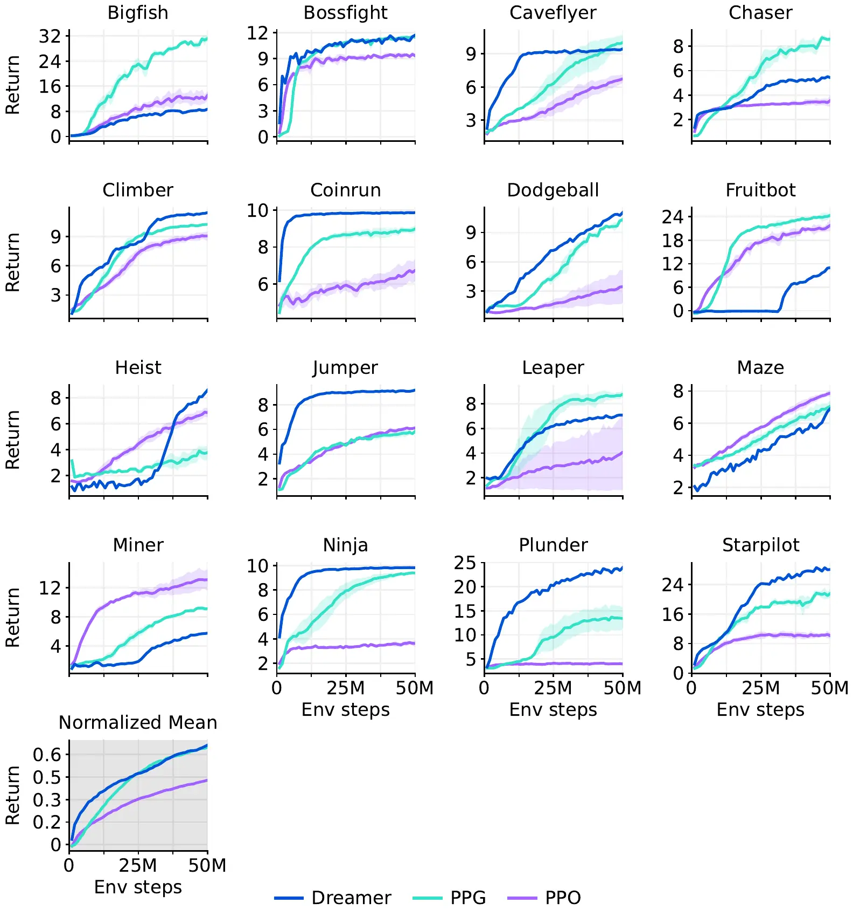
| 任务 | 原版 PPO | PPO | PPG | Dreamer |
|---|---|---|---|---|
| Environment steps | 50M | 50M | 50M | 50M |
| Bigfish | 10.92 | 12.72 | 31.26 | 8.62 |
| Bossfight | 10.47 | 9.36 | 11.46 | 11.61 |
| Caveflyer | 6.03 | 6.71 | 10.02 | 9.42 |
| Chaser | 4.48 | 3.54 | 8.57 | 5.49 |
| Climber | 7.59 | 9.04 | 10.24 | 11.43 |
| Coinrun | 7.93 | 6.71 | 8.98 | 9.86 |
| Dodgeball | 4.80 | 3.44 | 10.31 | 10.93 |
| Fruitbot | 20.28 | 21.69 | 24.32 | 11.04 |
| Heist | 2.25 | 6.87 | 3.77 | 8.51 |
| Jumper | 5.09 | 6.13 | 5.84 | 9.17 |
| Leaper | 5.90 | 4.07 | 8.76 | 7.05 |
| Maze | 4.97 | 7.86 | 7.06 | 6.85 |
| Miner | 7.56 | 12.97 | 9.08 | 5.71 |
| Ninja | 6.16 | 3.62 | 9.38 | 9.82 |
| Plunder | 11.16 | 3.99 | 13.44 | 23.81 |
| Starpilot | 17.00 | 10.13 | 21.57 | 28.00 |
| Normalized mean | 41.16 | 42.80 | 64.89 | 66.01 |
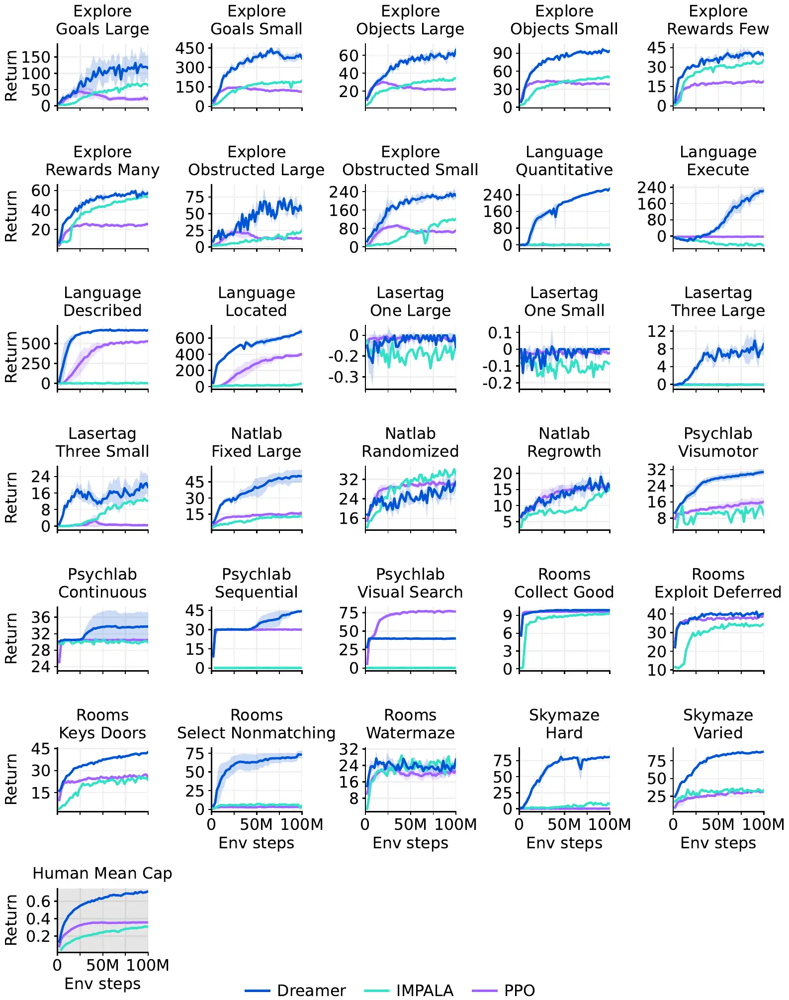
| 任务 | R2D2+ | IMPALA | IMPALA | IMPALA | PPO | Dreamer |
|---|---|---|---|---|---|---|
| Environment steps | 10B | 10B | 1B | 100M | 100M | 100M |
| Explore Goal Locations Large | 174.7 | 316.0 | 137.8 | 64.2 | 21.2 | 116.7 |
| Explore Goal Locations Small | 460.7 | 482.0 | 302.8 | 196.1 | 115.1 | 372.8 |
| Explore Object Locations Large | 60.6 | 91.0 | 55.1 | 34.3 | 22.5 | 63.9 |
| Explore Object Locations Small | 83.7 | 100.4 | 75.9 | 50.6 | 38.9 | 93.5 |
| Explore Object Rewards Few | 80.7 | 92.6 | 46.9 | 34.6 | 19.0 | 40.0 |
| Explore Object Rewards Many | 75.8 | 89.4 | 68.5 | 53.3 | 25.5 | 58.1 |
| Explore Obstructed Goals Large | 95.5 | 102.0 | 57.9 | 23.7 | 12.9 | 52.8 |
| Explore Obstructed Goals Small | 311.9 | 372.0 | 214.9 | 118.0 | 70.4 | 224.6 |
| Language Answer Quantitative Question | 344.4 | 362.0 | 304.7 | 1.0 | 0.3 | 266.0 |
| Language Execute Random Task | 497.4 | 465.4 | 140.8 | –44.4 | –2.5 | 223.7 |
| Language Select Described Object | 617.6 | 664.0 | 618.4 | 0.2 | 526.9 | 665.5 |
| Language Select Located Object | 772.8 | 731.4 | 413.0 | 38.2 | 397.5 | 679.5 |
| Lasertag One Opponent Large | 0.0 | 0.0 | 0.0 | –0.1 | 0.0 | –0.1 |
| Lasertag One Opponent Small | 31.8 | 0.0 | 0.0 | –0.1 | 0.0 | 0.0 |
| Lasertag Three Opponents Large | 28.6 | 32.2 | 10.4 | –0.1 | 0.0 | 9.0 |
| Lasertag Three Opponents Small | 49.0 | 57.2 | 37.1 | 12.1 | 0.4 | 18.8 |
| Natlab Fixed Large Map | 60.6 | 63.4 | 53.8 | 13.0 | 15.8 | 50.5 |
| Natlab Varying Map Randomized | 42.4 | 47.0 | 40.5 | 35.3 | 29.6 | 31.2 |
| Natlab Varying Map Regrowth | 24.6 | 34.0 | 25.5 | 15.3 | 16.3 | 16.7 |
| Psychlab Arbitrary Visuomotor Mapping | 33.1 | 38.4 | 16.5 | 11.9 | 16.0 | 30.7 |
| Psychlab Continuous Recognition | 30.0 | 28.6 | 30.0 | 30.1 | 30.5 | 33.8 |
| Psychlab Sequential Comparison | 30.0 | 29.6 | 0.0 | 0.0 | 30.0 | 44.3 |
| Psychlab Visual Search | 79.9 | 80.0 | 0.0 | 0.0 | 76.6 | 40.1 |
| Rooms Collect Good Objects Test | 9.9 | 10.0 | 9.9 | 9.3 | 9.7 | 9.9 |
| Rooms Exploit Deferred Effects Test | 38.1 | 62.2 | 37.6 | 34.5 | 39.0 | 40.4 |
| Rooms Keys Doors Puzzle | 46.2 | 54.6 | 36.9 | 24.2 | 26.0 | 42.4 |
| Rooms Select Nonmatching Object | 63.6 | 39.0 | 63.2 | 4.0 | 2.7 | 73.1 |
| Rooms Watermaze | 49.0 | 47.0 | 50.1 | 23.6 | 21.2 | 26.1 |
| Skymaze Irreversible Path Hard | 76.0 | 80.0 | 46.4 | 7.7 | 0.0 | 80.9 |
| Skymaze Irreversible Path Varied | 76.0 | 100.0 | 69.8 | 32.7 | 31.3 | 87.7 |
| Human mean capped (%) | 85.4 | 85.1 | 66.3 | 31.0 | 35.9 | 71.4 |
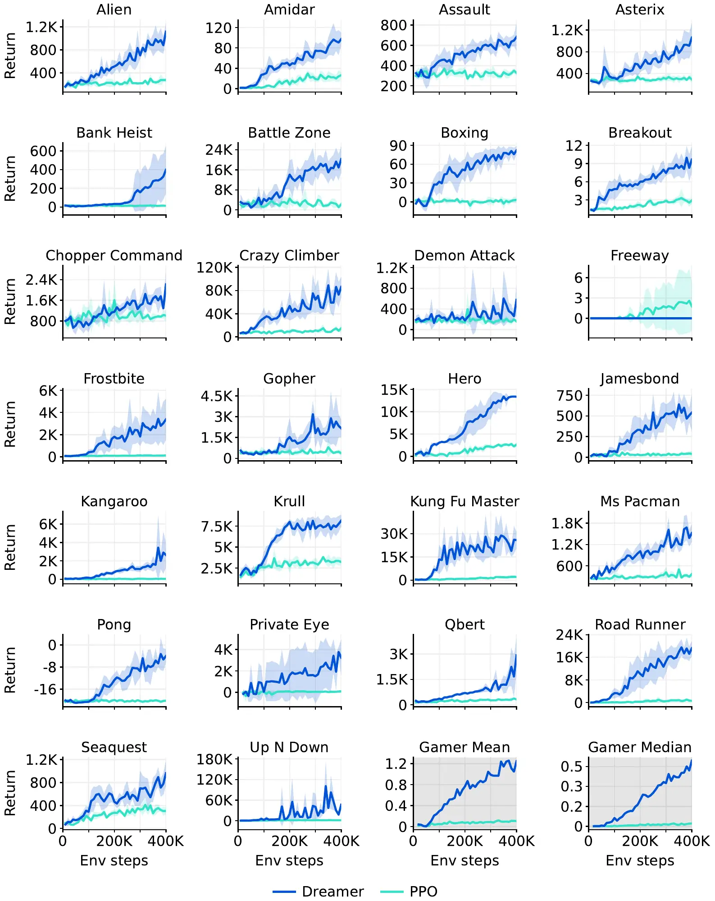
| 任务 | Random | Human | PPO | SimPLe | SPR | TWM | IRIS | Dreamer |
|---|---|---|---|---|---|---|---|---|
| Environment steps | — | — | 400K | 400K | 400K | 400K | 400K | 400K |
| Alien | 228 | 7128 | 276 | 617 | 842 | 675 | 420 | 1118 |
| Amidar | 6 | 1720 | 26 | 74 | 180 | 122 | 143 | 97 |
| Assault | 222 | 742 | 327 | 527 | 566 | 683 | 1524 | 683 |
| Asterix | 210 | 8503 | 292 | 1128 | 962 | 1117 | 854 | 1062 |
| Bank Heist | 14 | 753 | 14 | 34 | 345 | 467 | 53 | 398 |
| Battle Zone | 2360 | 37188 | 2233 | 4031 | 14834 | 5068 | 13074 | 20300 |
| Boxing | 0 | 12 | 3 | 8 | 36 | 78 | 70 | 82 |
| Breakout | 2 | 30 | 3 | 16 | 20 | 20 | 84 | 10 |
| Chopper Command | 811 | 7388 | 1005 | 979 | 946 | 1697 | 1565 | 2222 |
| Crazy Climber | 10780 | 35829 | 14675 | 62584 | 36700 | 71820 | 59324 | 86225 |
| Demon Attack | 152 | 1971 | 160 | 208 | 518 | 350 | 2034 | 577 |
| Freeway | 0 | 30 | 2 | 17 | 19 | 24 | 31 | 0 |
| Frostbite | 65 | 4335 | 127 | 237 | 1171 | 1476 | 259 | 3377 |
| Gopher | 258 | 2412 | 368 | 597 | 661 | 1675 | 2236 | 2160 |
| Hero | 1027 | 30826 | 2596 | 2657 | 5859 | 7254 | 7037 | 13354 |
| Jamesbond | 29 | 303 | 41 | 100 | 366 | 362 | 463 | 540 |
| Kangaroo | 52 | 3035 | 55 | 51 | 3617 | 1240 | 838 | 2643 |
| Krull | 1598 | 2666 | 3222 | 2205 | 3682 | 6349 | 6616 | 8171 |
| Kung Fu Master | 258 | 22736 | 2090 | 14862 | 14783 | 24555 | 21760 | 25900 |
| Ms Pacman | 307 | 6952 | 366 | 1480 | 1318 | 1588 | 999 | 1521 |
| Pong | –21 | 15 | –20 | 13 | –5 | 19 | 15 | –4 |
| Private Eye | 25 | 69571 | 100 | 35 | 86 | 87 | 100 | 3238 |
| Qbert | 164 | 13455 | 317 | 1289 | 866 | 3331 | 746 | 2921 |
| Road Runner | 12 | 7845 | 602 | 5641 | 12213 | 9109 | 9615 | 19230 |
| Seaquest | 68 | 42055 | 305 | 683 | 558 | 774 | 661 | 962 |
| Up N Down | 533 | 11693 | 1502 | 3350 | 10859 | 15982 | 3546 | 46910 |
| Gamer mean (%) | 0 | 100 | 11 | 33 | 62 | 96 | 105 | 125 |
| Gamer median (%) | 0 | 100 | 2 | 13 | 40 | 51 | 29 | 49 |
表 10 对比各方法对 Atari100k 协议的偏离（第 32 页）。作者说 EfficientMuZero 最高，但改了环境配置；IRIS 在 Freeway 上用了单独的探索超参数。
| 设定 | SimPLe | EffMuZero | SPR | IRIS | TWM | Dreamer |
|---|---|---|---|---|---|---|
| 玩家分 (%) | 33 | 190 | 62 | 105 | 96 | 125 |
| 玩家中位 (%) | 13 | 109 | 40 | 29 | 51 | 49 |
| GPU 天 | 5.0 | 0.6 | 0.1 | 3.5 | 0.4 | 0.1 |
| 在线规划 | — | X | — | — | — | — |
| 数据增强 | — | — | X | — | — | — |
| 非均匀回放 | — | X | X | — | X | — |
| 单独超参数 | — | — | — | X | — | — |
| 提高分辨率 | — | X | X | — | — | — |
| 用生命信息 | — | X | X | X | X | — |
| 提前重置 | — | X | — | X | — | — |
| 单独评测回合 | X | X | X | X | X | — |
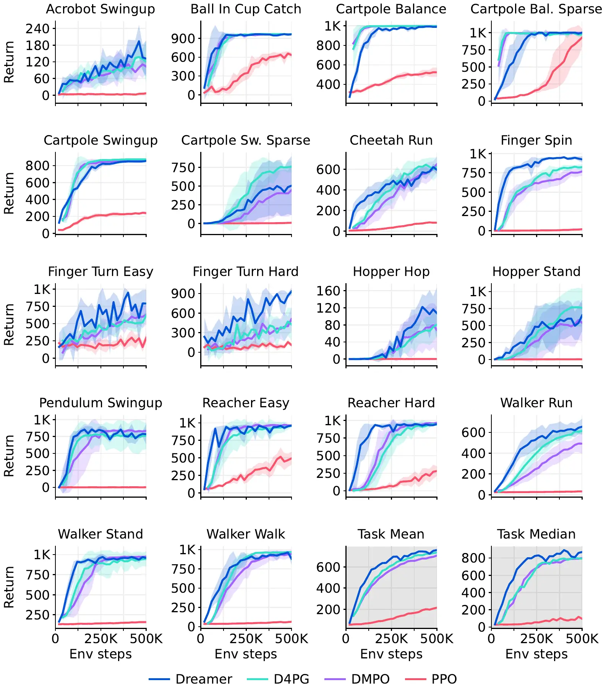
| 任务 | PPO | DDPG | DMPO | D4PG | Dreamer |
|---|---|---|---|---|---|
| Environment steps | 500K | 500K | 500K | 500K | 500K |
| Acrobot Swingup | 6 | 100 | 103 | 124 | 134 |
| Ball In Cup Catch | 632 | 917 | 968 | 968 | 962 |
| Cartpole Balance | 523 | 997 | 999 | 999 | 990 |
| Cartpole Balance Sparse | 930 | 992 | 999 | 974 | 990 |
| Cartpole Swingup | 240 | 864 | 860 | 875 | 852 |
| Cartpole Swingup Sparse | 7 | 703 | 438 | 752 | 491 |
| Cheetah Run | 82 | 596 | 650 | 624 | 614 |
| Finger Spin | 18 | 775 | 769 | 823 | 931 |
| Finger Turn Easy | 281 | 499 | 620 | 612 | 793 |
| Finger Turn Hard | 106 | 313 | 495 | 421 | 889 |
| Hopper Hop | 0 | 36 | 68 | 80 | 113 |
| Hopper Stand | 3 | 484 | 549 | 762 | 576 |
| Pendulum Swingup | 1 | 767 | 834 | 759 | 788 |
| Reacher Easy | 494 | 934 | 961 | 960 | 954 |
| Reacher Hard | 288 | 949 | 968 | 937 | 938 |
| Walker Run | 31 | 561 | 493 | 616 | 649 |
| Walker Stand | 159 | 965 | 975 | 947 | 964 |
| Walker Walk | 64 | 952 | 942 | 969 | 936 |
| Task mean | 94 | 771 | 801 | 792 | 871 |
| Task median | 215 | 689 | 705 | 733 | 754 |
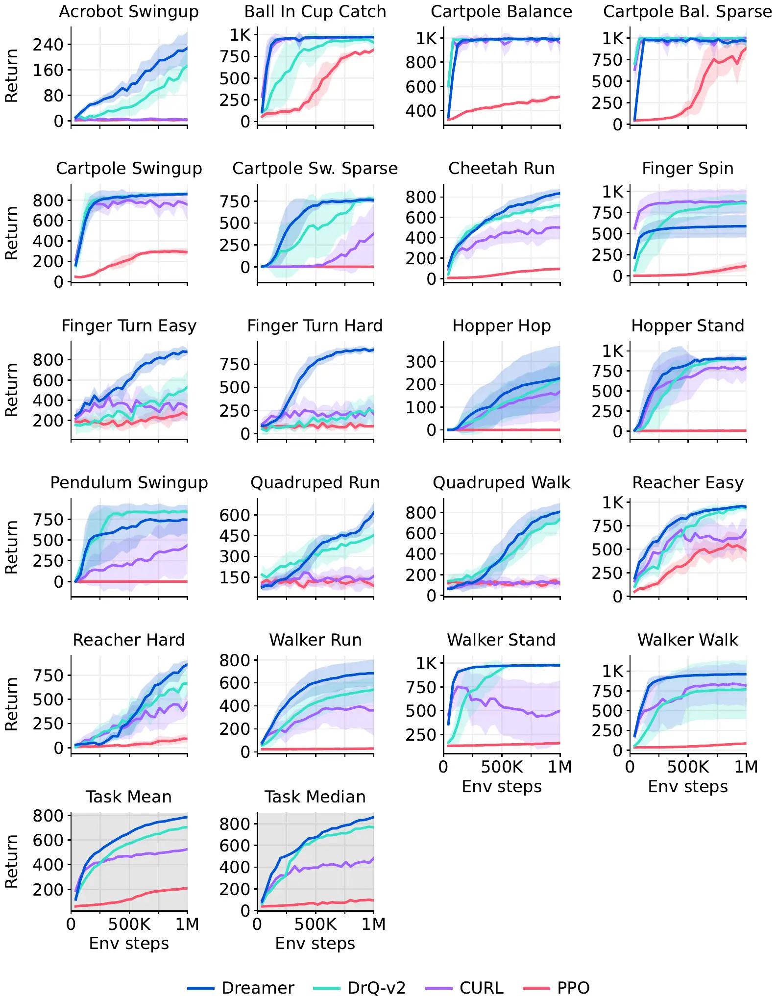
| 任务 | PPO | SAC | CURL | DrQ-v2 | Dreamer |
|---|---|---|---|---|---|
| Environment steps | 1M | 1M | 1M | 1M | 1M |
| Acrobot Swingup | 3 | 4 | 4 | 166 | 229 |
| Ball In Cup Catch | 829 | 176 | 970 | 928 | 972 |
| Cartpole Balance | 516 | 937 | 980 | 992 | 993 |
| Cartpole Balance Sparse | 881 | 956 | 999 | 987 | 964 |
| Cartpole Swingup | 290 | 706 | 771 | 863 | 861 |
| Cartpole Swingup Sparse | 1 | 149 | 373 | 773 | 759 |
| Cheetah Run | 95 | 20 | 502 | 716 | 836 |
| Finger Spin | 118 | 291 | 880 | 862 | 589 |
| Finger Turn Easy | 253 | 200 | 340 | 525 | 878 |
| Finger Turn Hard | 79 | 94 | 231 | 247 | 904 |
| Hopper Hop | 0 | 0 | 164 | 221 | 227 |
| Hopper Stand | 4 | 5 | 777 | 903 | 903 |
| Pendulum Swingup | 1 | 592 | 413 | 843 | 744 |
| Quadruped Run | 88 | 54 | 149 | 450 | 617 |
| Quadruped Walk | 112 | 49 | 121 | 726 | 811 |
| Reacher Easy | 487 | 67 | 689 | 944 | 951 |
| Reacher Hard | 94 | 7 | 472 | 670 | 862 |
| Walker Run | 30 | 27 | 360 | 539 | 684 |
| Walker Stand | 161 | 143 | 486 | 978 | 976 |
| Walker Walk | 87 | 40 | 822 | 768 | 961 |
| Task mean | 94 | 81 | 479 | 770 | 861 |
| Task median | 206 | 226 | 525 | 705 | 786 |
Nature 的控制基准是另一组实验：两个模式都是 20 个任务、100 万步，对手里有 TD-MPC2。下面两张表抄自 补充材料 PDF 表 5、表 6。这里的均值和中位数是对的：Proprio Dreamer 843 对 DMPO 834，只高一点，Nature 正文也改说“matches the state of the art”。
| 任务 | PPO | D4PG | TD-MPC2 | DMPO | Dreamer |
|---|---|---|---|---|---|
| Environment steps | 1M | 1M | 1M | 1M | 1M |
| Acrobot Swingup | 14 | 372 | 496 | 432 | 378 |
| Ball In Cup Catch | 668 | 972 | 982 | 979 | 978 |
| Cartpole Balance | 397 | 990 | 994 | 977 | 993 |
| Cartpole Balance Sparse | 684 | 990 | 1000 | 996 | 1000 |
| Cartpole Swingup | 189 | 869 | 864 | 842 | 852 |
| Cartpole Swingup Sparse | 9 | 801 | 0 | 722 | 525 |
| Cheetah Run | 163 | 791 | 708 | 832 | 752 |
| Finger Spin | 92 | 862 | 988 | 924 | 958 |
| Finger Turn Easy | 270 | 919 | 937 | 950 | 972 |
| Finger Turn Hard | 76 | 779 | 944 | 910 | 963 |
| Hopper Hop | 0 | 72 | 394 | 217 | 308 |
| Hopper Stand | 5 | 538 | 799 | 663 | 887 |
| Pendulum Swingup | 45 | 578 | 793 | 832 | 817 |
| Quadruped Run | 131 | 835 | 868 | 816 | 916 |
| Quadruped Walk | 178 | 953 | 963 | 940 | 951 |
| Reacher Easy | 414 | 970 | 967 | 975 | 974 |
| Reacher Hard | 280 | 950 | 971 | 956 | 963 |
| Walker Run | 62 | 707 | 843 | 763 | 711 |
| Walker Stand | 282 | 980 | 994 | 983 | 984 |
| Walker Walk | 141 | 963 | 985 | 967 | 973 |
| Task mean | 205 | 795 | 825 | 834 | 843 |
| Task median | 152 | 865 | 941 | 917 | 954 |
| 任务 | PPO | SAC | TD-MPC2 | DrQ-v2 | Dreamer |
|---|---|---|---|---|---|
| Environment steps | 1M | 1M | 1M | 1M | 1M |
| Acrobot Swingup | 3 | 4 | 14 | 166 | 300 |
| Ball In Cup Catch | 829 | 176 | 971 | 920 | 975 |
| Cartpole Balance | 516 | 937 | 949 | 992 | 994 |
| Cartpole Balance Sparse | 881 | 956 | 968 | 981 | 975 |
| Cartpole Swingup | 290 | 706 | 703 | 863 | 843 |
| Cartpole Swingup Sparse | 1 | 149 | 76 | 773 | 411 |
| Cheetah Run | 95 | 20 | 334 | 716 | 846 |
| Finger Spin | 118 | 291 | 961 | 861 | 886 |
| Finger Turn Easy | 253 | 200 | 730 | 525 | 903 |
| Finger Turn Hard | 79 | 94 | 814 | 247 | 944 |
| Hopper Hop | 0 | 0 | 180 | 221 | 246 |
| Hopper Stand | 4 | 5 | 805 | 912 | 904 |
| Pendulum Swingup | 1 | 592 | 534 | 845 | 668 |
| Quadruped Run | 88 | 54 | 279 | 450 | 614 |
| Quadruped Walk | 112 | 49 | 165 | 726 | 897 |
| Reacher Easy | 487 | 67 | 930 | 944 | 960 |
| Reacher Hard | 94 | 7 | 827 | 670 | 922 |
| Walker Run | 30 | 27 | 575 | 539 | 797 |
| Walker Stand | 161 | 143 | 934 | 979 | 982 |
| Walker Walk | 87 | 40 | 923 | 768 | 966 |
| Task mean | 206 | 226 | 634 | 705 | 802 |
| Task median | 94 | 81 | 767 | 770 | 900 |
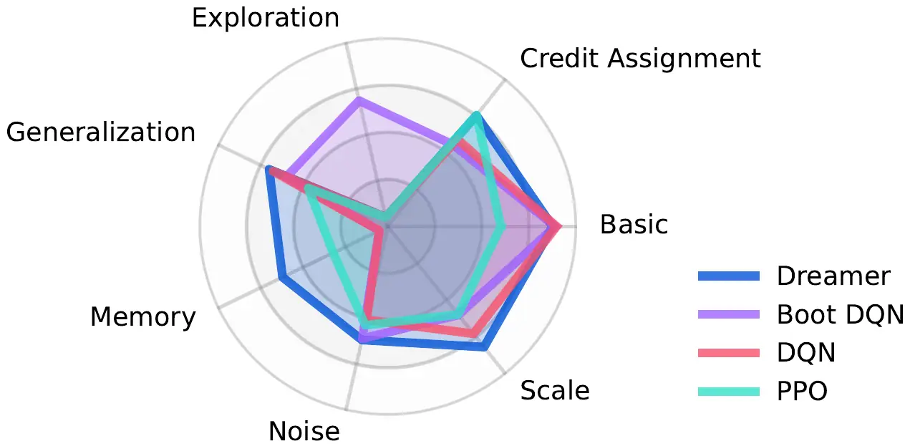
| 任务 | Random | PPO | AC-RNN | DQN | Boot DQN | Dreamer |
|---|---|---|---|---|---|---|
| Bandit | 0.00 | 0.38 | 1.00 | 0.93 | 0.98 | 0.96 |
| Bandit Noise | 0.00 | 0.61 | 0.63 | 0.71 | 0.80 | 0.75 |
| Bandit Scale | 0.00 | 0.39 | 0.60 | 0.74 | 0.83 | 0.78 |
| Cartpole | 0.04 | 0.84 | 0.40 | 0.85 | 0.69 | 0.93 |
| Cartpole Noise | 0.04 | 0.77 | 0.20 | 0.82 | 0.69 | 0.93 |
| Cartpole Scale | 0.04 | 0.83 | 0.12 | 0.72 | 0.65 | 0.92 |
| Cartpole Swingup | 0.00 | 0.00 | 0.00 | 0.00 | 0.15 | 0.03 |
| Catch | 0.00 | 0.91 | 0.87 | 0.92 | 0.99 | 0.96 |
| Catch Noise | 0.00 | 0.54 | 0.27 | 0.58 | 0.68 | 0.53 |
| Catch Scale | 0.00 | 0.90 | 0.17 | 0.85 | 0.65 | 0.94 |
| Deep Sea | 0.00 | 0.00 | 0.00 | 0.00 | 1.00 | 0.00 |
| Deep Sea Stochastic | 0.00 | 0.00 | 0.00 | 0.00 | 0.90 | 0.00 |
| Discounting Chain | 0.20 | 0.24 | 0.39 | 0.25 | 0.22 | 0.40 |
| Memory Len | 0.00 | 0.17 | 0.70 | 0.04 | 0.04 | 0.65 |
| Memory Size | 0.00 | 0.47 | 0.29 | 0.00 | 0.00 | 0.59 |
| Mnist | 0.05 | 0.77 | 0.56 | 0.85 | 0.85 | 0.61 |
| Mnist Noise | 0.05 | 0.41 | 0.22 | 0.38 | 0.34 | 0.34 |
| Mnist Scale | 0.05 | 0.76 | 0.09 | 0.49 | 0.31 | 0.55 |
| Mountain Car | 0.10 | 0.10 | 0.10 | 0.93 | 0.93 | 0.92 |
| Mountain Car Noise | 0.10 | 0.10 | 0.10 | 0.89 | 0.82 | 0.87 |
| Mountain Car Scale | 0.10 | 0.10 | 0.10 | 0.85 | 0.56 | 0.90 |
| Umbrella Distract | 0.00 | 1.00 | 0.09 | 0.30 | 0.26 | 0.74 |
| Umbrella Length | 0.00 | 0.87 | 0.43 | 0.39 | 0.39 | 0.78 |
| Basic | 0.04 | 0.60 | 0.58 | 0.90 | 0.89 | 0.88 |
| Credit assignment | 0.03 | 0.76 | 0.37 | 0.59 | 0.56 | 0.75 |
| Exploration | 0.00 | 0.00 | 0.00 | 0.00 | 0.68 | 0.01 |
| Generalization | 0.06 | 0.47 | 0.19 | 0.68 | 0.60 | 0.70 |
| Memory | 0.00 | 0.32 | 0.49 | 0.02 | 0.02 | 0.62 |
| Noise | 0.02 | 0.54 | 0.24 | 0.51 | 0.61 | 0.62 |
| Scale | 0.04 | 0.60 | 0.22 | 0.73 | 0.60 | 0.82 |
| Task mean (%) | 3 | 49 | 32 | 54 | 60 | 66 |
| Category mean (%) | 3 | 47 | 30 | 49 | 57 | 63 |
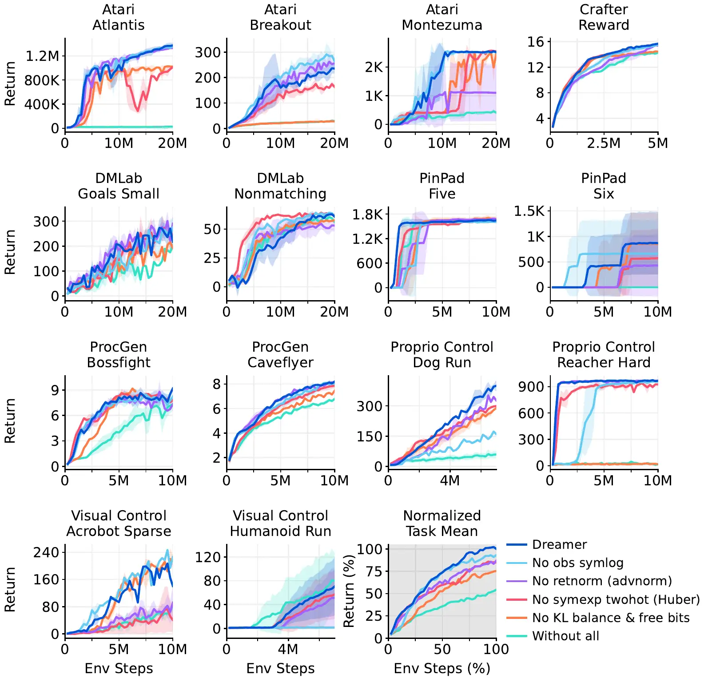
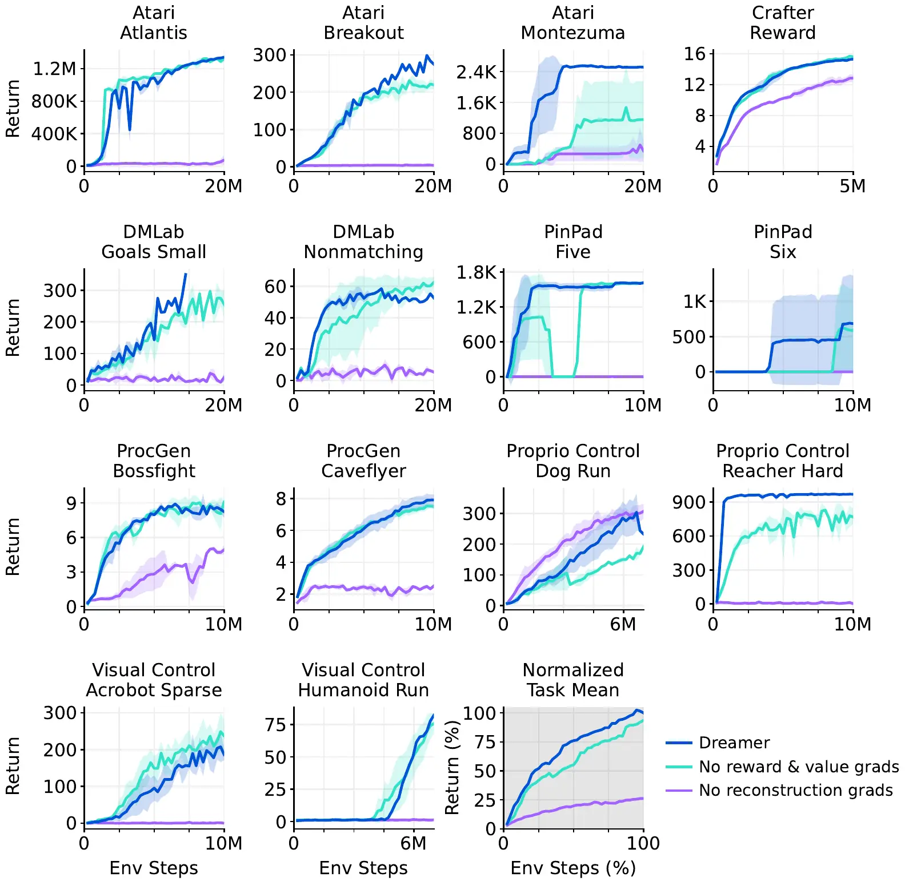
读的是 danijar/dreamerv3 e01491f（2026-10-04），MIT 许可，没有运行。Nature 版的 Code availability 指向这个仓库。动画的结构表有每个网络的逐项对比，这里列公式和文件的对应，以及差别。动画里凡是有差别的地方，我画的是代码。
| 论文 | 代码 | 一致吗 |
|---|---|---|
| 式 (1) RSSM | dreamerv3/rssm.py RSSM._observe, _prior, _core | 一致。先验 2 层，后验 1 层，正文没写层数 |
| 式 (3) | RSSM.loss | 一致。KL 对 32 个分类求和后截断（读者注 4） |
| 式 (5) | agent.py lambda_return | 不一致：代码下标后移，用下一状态的价值（读者注 6） |
| 式 (5) 的 γ | contdisc: True | 实现不同，等价（读者注 7） |
| 式 (6) | imag_loss | 一致，加了 weight。熵的符号代码是对的（读者注 8） |
| 式 (7) | embodied/jax/utils.py Normalize | 一致（读者注 9） |
| 式 (9) | embodied/jax/nets.py symlog, symexp | 一致，用 log1p 和 expm1 |
| 式 (10)(12) | heads.py symexp_twohot，outs.py TwoHot | 一致（读者注 10） |
| 回放评论家 | repl_loss | 一致。末端用想象回报的起点值 boot |
| 表 3、4 | configs.yaml | 12M 和 β₂ 不一致（读者注 17） |
| 表 2 | configs.yaml | 回放比例部分不一致（读者注 16） |
| 分数 | scores/*.json.gz，baselines.yaml | 有数据，读过 Minecraft 和控制基准的覆盖范围（读者注 14） |
weight 没写；EMA 正则取期望。链接在 2026 年 11 月 6 日用脚本核对过可以打开，除了 minerl.io：脚本连不上（连接失败，不是 404），我没有核实，所以 MineRL 链到它的 GitHub。
| 名称 | 是什么 | 主页或代码 | 论文 |
|---|---|---|---|
| DreamerV3 | 本文 | 代码 | 2301.04104 · Nature |
| Dreamer V1 | 本站姐妹页 | 代码 | 1912.01603 |
| DreamerV2 | 离散隐变量和 KL 平衡的来源 | github.com/danijar/dreamerv2 | 2010.02193 |
| SuperMimic | 读这篇的起因 | 本站精读 | 2610.28480 |
| Atari（ALE） | Atari、Atari100k 基准 | github.com/Farama-Foundation/Arcade-Learning-Environment | 1207.4708 |
| ProcGen | 16 个程序生成游戏 | github.com/openai/procgen | 1912.01588 |
| DMLab | 3D 任务 | github.com/google-deepmind/lab | 1612.03801 |
| DeepMind Control Suite | Proprio 和 Visual 控制 | github.com/google-deepmind/dm_control | 1801.00690 |
| BSuite | 行为测试集 | github.com/google-deepmind/bsuite | 1908.03568 |
| MineRL | Minecraft 环境和比赛 | github.com/minerllabs/minerl | 1904.10079 |
| Crafter | 消融和缩放实验用 | github.com/danijar/crafter | 2109.06780 |
| PPO | 贯穿全文的基线 | Acme | 1707.06347 |
| MuZero | Atari 对手 | – | 1911.08265 |
| IMPALA | DMLab、Minecraft 对手 | – | 1802.01561 |
| IRIS | Atari100k 对手 | github.com/eloialonso/iris | 2209.00588 |
| TWM | Atari100k 对手 | github.com/jrobine/twm | – |
| SPR | Atari100k 对手 | github.com/mila-iqia/spr | 2007.05929 |
| TD-MPC2 | Nature 版的控制对手 | github.com/nicklashansen/tdmpc2 | 2310.16828 |
| VPT | 用人类数据拿到钻石 | – | 2206.11795 |